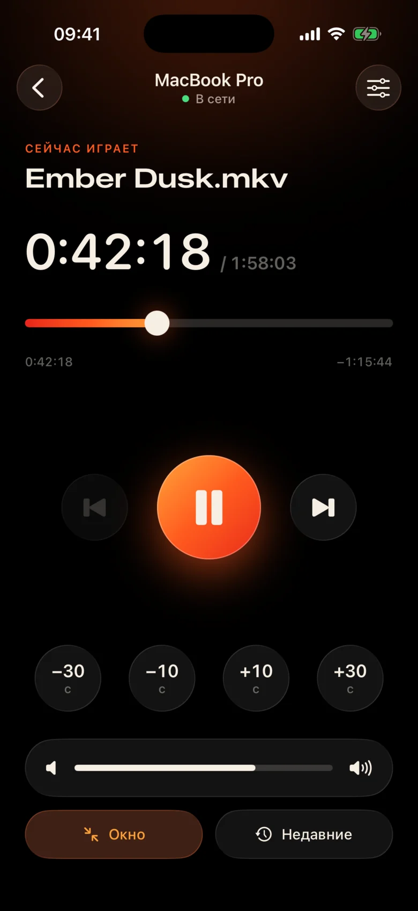
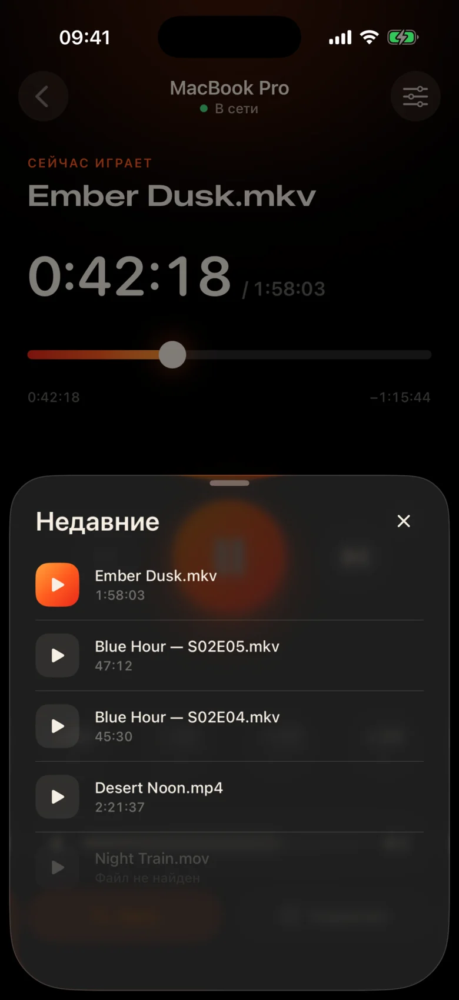
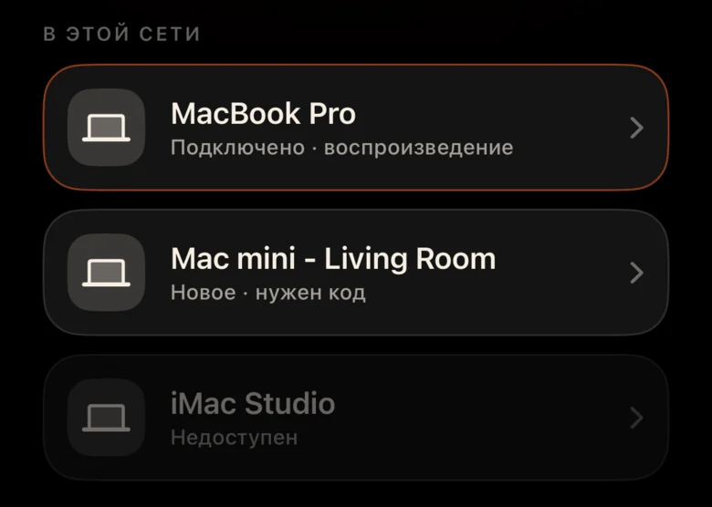
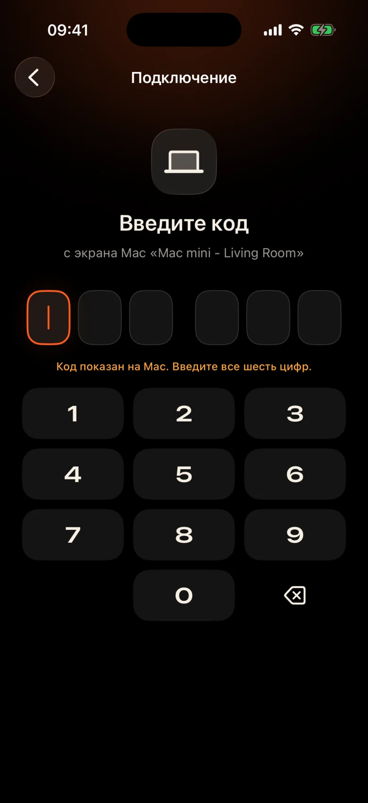

Mac — на другом конце комнаты
Он подключён к проектору у стены. Каждая пауза — встать, найти в темноте трекпад и прищуриться на крошечную панель.
Kinrox: пауза на телефоне в руке.
Kinrox показывает любое видео на Mac, а iPhone становится его пультом. MacBook — у проектора, вы — на диване: пауза, назад на 10 секунд, потише или следующая серия, не вылезая из-под пледа.


Он подключён к проектору у стены. Каждая пауза — встать, найти в темноте трекпад и прищуриться на крошечную панель.
Kinrox: пауза на телефоне в руке.
В одной сцене шёпот, в следующей — взрывы, а за стеной уже кто-то спит.
Kinrox: ползунок громкости под большим пальцем.
Веб-панели с IP-адресами и паролями, вкладка браузера, которая засыпает, кнопки для стола, а не для дивана.
Kinrox: сам находит Mac и подключается по одному коду.

Крупные кнопки, тёмная тёплая тема и лёгкий тактильный отклик на каждое нажатие. Можно управлять, не отрываясь от фильма.
Каждую кнопку легко нажать даже в полусне.
Пропустили реплику — одно касание назад. Заставка — два касания вперёд.
Собственная громкость Kinrox от 0 до 100. Системная громкость Mac не меняется.
Предыдущий и следующий файл из той же папки — в порядке Finder.
Выберите то, что смотрели раньше, — файл откроется на Mac.
Тяните шкалу к любому моменту и включайте полный экран прямо с дивана.
Без IP-адресов, паролей и аккаунтов. После первого кода iPhone подключается сам.
Перетащите файл в Kinrox или нажмите ⌘ O. Пульт на Mac включён по умолчанию.
Kinrox появится в списке сам, если оба устройства в одной сети Wi‑Fi.

Mac покажет код, который действует две минуты. После трёх ошибок он сгорает.


iPhone Алексея хочет управлять Kinrox. Введите этот код на телефоне.
 Код действителен ещё 1:47
Код действителен ещё 1:47
Главное — видео. Тонкий слой стекла появляется, когда нужен, и прячется через три секунды.

Внутри libmpv — движок mpv и IINA. Выбирайте встроенные и внешние звуковые дорожки и субтитры. За аппаратное декодирование отвечает VideoToolbox.
Kinrox выстраивает видео из папки и сам включает следующую серию — «2» раньше «10», как в Finder.
Клавиши ⏯ на клавиатуре, Пункт управления и «Исполняется» управляют Kinrox. До 20 недавних файлов ждут на стартовом экране.
У Kinrox нет серверов. Mac и iPhone общаются напрямую — и только друг с другом.
Поиск через Bonjour, подключения — только из вашей подсети. Публичные адреса и сотовая связь отклоняются.
Каждая команда идёт по зашифрованному каналу. Токены подключения хранятся в Связке ключей на обоих устройствах.
X25519HKDF-SHA256ChaCha20-Poly1305Регистрироваться не нужно, наружу ничего не отправляется. На этом сайте тоже нет аналитики и cookie.
Пульт видит названия и длительность, но не пути к файлам. Недавний файл открывается на стороне Mac.
Kinrox написан на Swift 6 и SwiftUI поверх libmpv. Весь код плеера, пульта и протокола — на GitHub.
Сборка из исходников# Xcode 26.5, XcodeGen и mpv из Homebrew
brew install xcodegen mpv pkg-config
git clone https://github.com/awaik/Kinrox.git
cd Kinrox
cp -n Config/Signing.local.xcconfig.example \
Config/Signing.local.xcconfig
# Укажите свою команду: docs/runbooks/RUNBOOK-BUILD-AND-SIGNING.md
./Scripts/check-env.sh
./Scripts/generate.sh
xcodebuild -workspace Kinrox.xcworkspace \
-scheme PlayerMac -configuration Debug \
-destination 'platform=macOS,arch=arm64' \
-derivedDataPath DerivedData build
open DerivedData/Build/Products/Debug/Kinrox.appНет. Mac и iPhone должны быть в одной сети Wi‑Fi — и всё. Kinrox не выходит в интернет.
Да. Kinrox показывает видео там, куда выводит изображение Mac: на проектор, телевизор по HDMI или экран, подключённый через AirPlay.
Mac на Apple silicon с macOS 14 Sonoma или новее и iPhone с iOS 17 или новее. Mac на Intel пока не поддерживаются.
Да. Каждый iPhone подключается один раз по своему коду, одновременно на связи может быть до четырёх пультов. Любой из них можно отключить в настройках плеера.
Да. На Mac откройте панель «Аудио и субтитры» или меню «Аудио» и «Субтитры». Можно выбрать встроенную дорожку, найти внешний файл во вложенных папках или выключить субтитры. Kinrox умеет запоминать выбор для следующей серии.
Нисколько. Kinrox бесплатен, а его код открыт по лицензии GNU GPL v3.
Kinrox для Mac и iPhone. Бесплатно, с открытым кодом и специально для вечеров с кино.